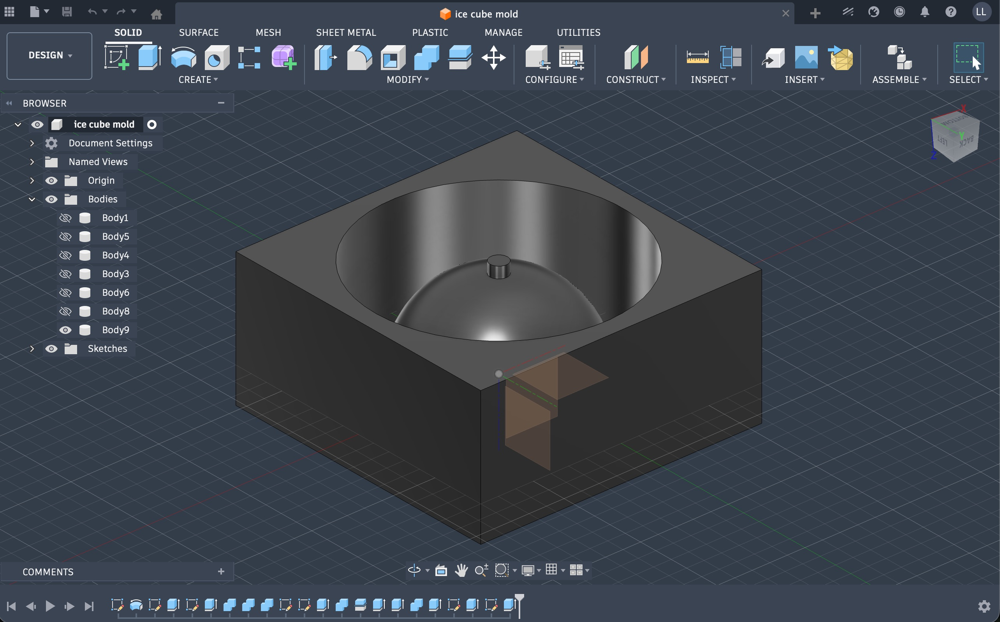
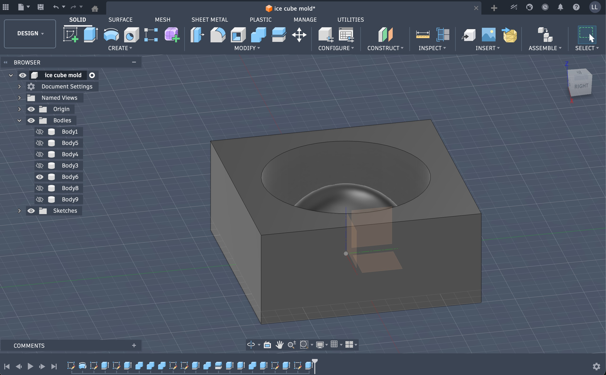
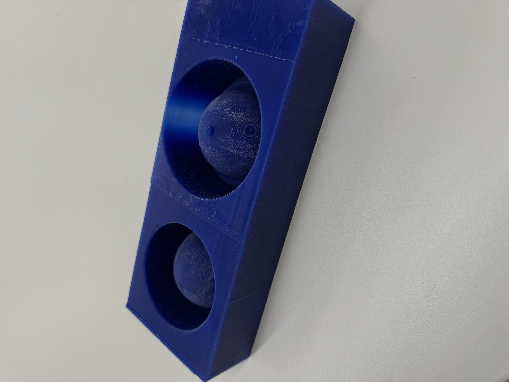
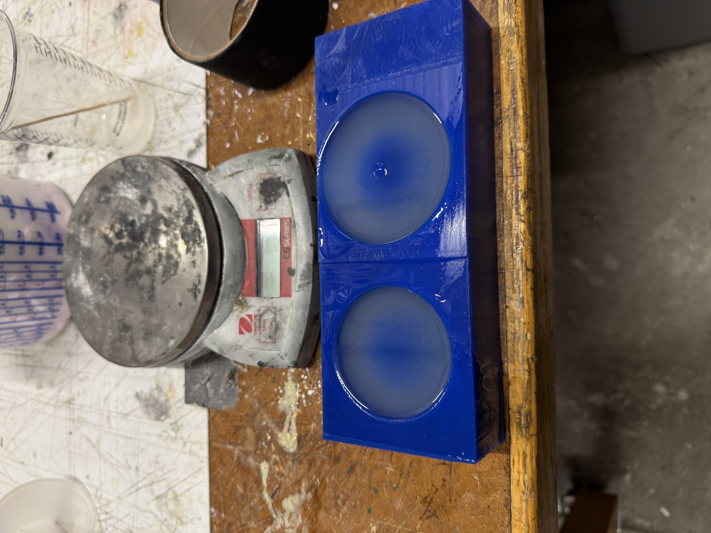
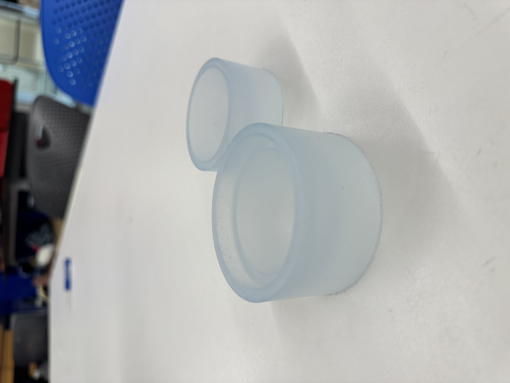
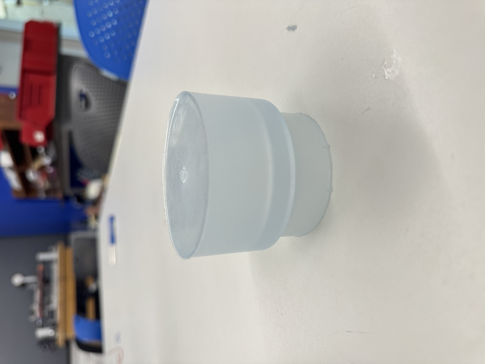

Design
This week, I wanted to try to make a spherical ice mold for large ice spheres. After measuring some of the cups I had, I settled on a sphere with a 65mm diameter. I planned to split the mold into two pieces, producing two semi-spheres that I would snap together to make the sphere. Since I needed to make sure they aligned properly, I made lips on the edge of the sphere such that one side could sit on top of the other side of the mold.
However, when I inspected the available tool lengths, I realized that I would have to cut down on the size of the sphere in order to use the SRM-20. After measuring the tool tip and doing some math, I ended up making molds for a 50mm diameter sphere.



Molding
Since I wanted to make it an ice mold, I used food-safe silicone for my molds. I cured overnight and popped them out the next afternoon with a popsicle stick. The molds fit together nicely, and held water without spilling.



In the future, I might make the pour hole larger, since I had a hard time filling the mold with water. In addition, I might make the inner cylinder a little larger just so there's a tighter fit against the outer cylinder, but technically speaking there is no spillage as is.